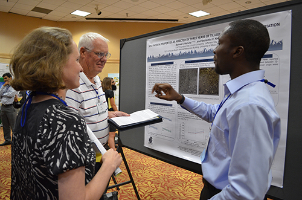

Find us on Twitter
Find us on TwitterPosters
2015 Project Posters
This year, posters were presented at our annual conference. Thirty of them, highlighting the reseach of our participating graduate and postdoctoral students, were presented again at a poster symposium, in Washington, D.C., at the USDA, on Oct.r 15. The Oct. 15 booklet, summarizing their research, can be viewed here. The posters below are arranged alphabetically by first author's last name.
Acharya and Nkongolo
Authors: Shanta Acharya and Nsalambi V. Nkongolo. Lincoln University
Title: Effect of Tillage, Cover Crop and Crop Rotation in Soybean Yield.
Basche et al.
Authors: Andrea Basche, Fernando Miguez, Sotirios Archontoulis (Iowa State University), and Thomas Kaspar (National Laboratory for Agriculture and the Environment)
Title: Simulating long-term impacts of cover crops and climate change on crop production and environmental outcomes in the Midwest.
Beehler and Kravchenko
Authors: J. Beehler and A. Kravchenko. Michigan State University
Title: Carbon Processes in the Presence of Cover Crop on Diverse Terrain.
Behnke et al.
Authors: Gevan D. Behnke, Stacy M. Zuber, Emerson D. Nafziger and María B. Villamil. University of Illinois
Title: Long term crop rotation and tillage effects on greenhouse gas emissions in Illinois, USA.
Chapman et al.
Authors: Kim Chapman, Kristi Lekies (The Ohio State University), Todd Higgins (Lincoln University), Colin McKellar, Cody Troop, and Dennis Todey (South Dakota State University)
Title: Increasing Teacher Knowledge of Agriculture and Climate Change: The 2015 Climate Camps.
Craft et al.
Authors: Kristina Craft, Linda Schott, Carl Pederson, and Matthew Helmers. Iowa State University
Title: Simulating Effects of Drainage on Water and Nitrogen Footprints with RZWQM2.
DiGiulio et al
Authors: Laura DiGiulio1, Kristi Lekies (The Ohio State University), David Blockstein (National Council for Science and the Environment), William Miller (Iowa State University), Richard Moore (The Ohio State University), (Lincoln University), and Dennis Todey (South Dakota State University)
Title: Preparing the Next Generation of Scientists: A Transdisciplinary Approach.
Dumont and Basso
Authors: Benjamin Dumont, and Bruno Basso. Michigan State University
Title: Climate Variability, Management Practices and Corn Yield in the Midwest US: Adaptation and Mitigation Strategies to Climate Change.
Dunbar et al.
Authors: Mike W. Dunbar, Aaron J. Gassmann, and Matthew E. O’Neal. Iowa State University
Title: Increased Risk of Insect Injury to Corn with Rye Cover.
Duval et al.
Authors: Benjamin Duval (University of Wisconsin), Peter Scharf (University of Missouri), Melannie Hartman (Colorado State University), Stephen Del Grosso (USDA-ARS), and Rob Anex (University of Wisconsin)
Title: Can Varying Nitrogen Application Rates and Timing Reduce the Environmental Impact of Corn Under Future Climate?
Eidson et al.
Authors: Christopher D. Eidson and Rattan Lal. The Ohio State University
Title: Soil quality as affected by rye under no-till corn-soybean rotation.
Frank et al.
Authors: Trevor Frank, Joseph D. Rorick, and Eileen Kladivko. Purdue University
Title: Cereal Rye (Secale cereale L.) Cover Crop Effects on Cash Crops and Soil Properties in Southeastern Indiana.
Fry et al.
Authors: Jessica Fry, Andrey Guber, Moslem Ladoni, Juan Munoz-Robayo and Alexandra Kravchenko. Michigan State University
Title: The Effect of Soil Parameter Upscaling on the Predictive Accuracy of DSSAT Crop Simulation Modeling of Soybean Yields.
Gardezi and Arbuckle
Authors: Maaz Gardezi and J.G. Arbuckle Jr. Iowa State University
Title: Faith in human ingenuity can reduce farmers’ risk perception and support for climate change adaptation.
Gu et al.
Authors: Lei Gu, Robert Anex (University of Wisconsin), Michael Fienen (United States Geological Survey- Wisconsin Water Science Center), and Matthew Helmers (Iowa State University)
Title: Understanding prediction robustness of the Root Zone Water Quality Model (RZWQM).
Haruna and Nkongolo
Authors: Samuel I. Haruna (Lincoln University and University of Missouri) and Nsalambi V. Nkongolo (Lincoln University)
Title: Influence of three years of tillage, cover crop and crop rotation managements on soil nutrients.
Hughes et al.
Authors: Caroline Hughes, Laura Bowling, Jane Frankenberger (Purdue University), Jeff Strock, Lu Zhang (University of Minnesota), Norm Fausey (USDA-ARS), Lindsay Pease (The Ohio State University), Matt Helmers, Linda Schott (Iowa State University), and Eileen Kladivko (Purdue University)
Title: Yield impact of drainage water management based on soil moisture.
Iqbal et al.
Authors: Javed Iqbal, Michael J Castellano, Matthew J. Helmers (Iowa State University), Timothy B Parkin (USDA-ARS), and Eileen J. Kladivko (Purdue University)
Title: Nitrous Oxide Emissions As Affected By Drainage Design and Management in Corn Based Cropping Systems.
29. Johnson and Lal
Authors: Reed M. Johnson and Dr. Rattan Lal. The Ohio State University
Title: On-Farm Assessment of the Effects of Recommended Management Practices on Potential Soil Carbon Losses in Northwest Ohio.
Johnson and Morton
Authors: Anna Johnson and Lois Wright Morton. Iowa State University
Title: Midwest Specialty Crop Growers’ Views on Climate Change Impacts.
Kazula et al.
Authors: Maciej Kazula, Joe Lauer, Richard Gaillard, and Thierno Diallo. University of Wisconsin
Title: Validation of DayCent Model on N2O Emission from Crop Rotations in Wisconsin.
Lagzdins et al.
Authors: Ainis Lagzdins, Matthew Helmers, Carl Pederson, Linda Schott, Xiaobo Zhou, and Aaron Daigh. Iowa State University.
Title: Assessing the Impacts of Agricultural Management Practices on Crop Yields and Nitrate-Nitrogen Concentrations from Subsurface Drainage in Iowa.
Liu et al.
Authors: Richard (Ruiqiang) Liu, Rattan Lal, and Raj Shrestha. The Ohio State University
Title: Correlation of Crop Yields and Soil Organic Carbon in Midwestern Region.
Lokhande et al.
Authors: Suresh Lokhande, Lori Abendroth, Katie Schwaegler and Lois Wright Morton. Iowa State University
Title: Sustainable Corn project team personnel, meetings and outputs: Facts and figures.
Marcillo and Miguez
Authors: Guillermo Marcillo and Fernando Miguez. Iowa State University
Title: Corn Yield Response to Winter Cover Crops: A Meta-Analysis Update.
Miller and Frescoln
Authors: Dr. Wade Miller and Laura Frescoln. Iowa State University
Title: CSCAP: Education team…Connecting the dots.
Moore et al.
Authors: Richard Moore, Kristi Lekies, Deana Hudgins, Kimberly Chapman (The Ohio State University), David Blockstein (National Council for Science and the Environment), William Miller (Iowa State University), Nsalambi Nkongolo, Todd Higgins (Lincoln University), Dennis Todey, and Colin McKellar (South Dakota State University)
Title: Objective 6 Education Team Outcomes for Year 5.
Panday and Nkongolo
Authors: Dinesh Panday and Nsalambi V. Nkongolo. Lincoln University
Title: Relationship between Soil Pore Space Indices and Greenhouse Gas Fluxes in a Corn-soybean Rotation in Central Missouri.
Patel et al.
Authors: Swetabh Patel, John E. Sawyer, John P. Lundvall, and Jeena I. Hall. Iowa State University
Title: Root and shoot biomass and nutrient composition in a winter rye cover crop.
Pease et al.
Authors: Lindsay Pease, Jay Martin (The Ohio State University), and Norm Fausey (USDA-Agricultural Research Service)
Title: Impact of Controlled Drainage Management on Nitrogen and Phosphorus Concentrations in Subsurface Drainage Discharge in the Western Lake Erie Basin.
Quigley et al.
Authors: Michelle Quigley, Alexandra Kravchenko (Michigan State University), and Mark Rivers (The University of Chicago)
Title: Use of computed microtomography to investigate the microstructure of soil aggregates.
Rai and Nkongolo
Authors: Dipti Rai and Nsalambi V. Nkongolo. Lincoln University
Title: Comparison between Gas Chromatograph (GC) and Photo Acoustic (PAS) Methods for Measuring CO2 and N2O Emissions in Corn-Soybean Field.
Roberts et al.
Authors: Rebecca Abbott Roberts, Carl Pedersen, Kristina Craft, Matthew Helmers, and Michael Castellano. Iowa State University
Title: Spring Timing and Method of Cereal Rye Termination Influence Soil Nitrate.
Roesch-McNally et al.
Authors: Gabrielle E. Roesch-McNally, J. Gordon Arbuckle and John C. Tyndall. Iowa State University
Title: Is it the Soil or is it the Weather? Corn Belt farmers’ conservation behavior motivations and adaptation strategies.
Saadat et al.
Authors: Samaneh Saadat, Jane Frankenberger, Laura Bowling, and Kyle Brooks. Purdue University
Title: Drainage Water Management Effect on Water Table Recession Rate.
Schott et al.
Authors: Linda R Schott, Matthew Helmers, Carl Pederson, and Ainis Lagzdins. Iowa State University
Title: Effects of Drainage on Crop Yield, Drainage Volume, Nitrate Loss, Water Table, and Planting Date in Southeastern Iowa.
Sharma and Nkongolo
Authors: Mandira Sharma and Dr. Nasalambi V Nkongolo. Lincoln University
Title: Short-term Effect of Soil Management Practices on Corn Yields (Tillage, Cover Cropping and Crop Rotation).
Shrestha et al.
Authors: Raj K Shrestha, Toru Nakajima, and Rattan Lal. The Ohio State University
Title: On-Farm Assessment of Soil Quality Index in Ohio and Michigan.
Sklenar and Cruse
Authors: Tim Sklenar and Richard M. Cruse. Iowa State University
Title: Tillage, Cover Crops, and Infiltration.
Snyder et al.
Authors: Emma M. Snyder, Van R. Haden, Steven W. Culman, Brian Slater (The Ohio State University), and Norman Fausey (USDA-ARS)
Title: The impact of interseeding cover crops into Ohio corn systems on competition for water and nutrient resources and on the surface soil physical properties.
Toosi et al.
Authors: Ehsan Toosi, Michelle Quigley, Alexandra Kravchenko (Michigan State University), Kusay Wheib (University of Baghdad), and Jingdong Mao (Old Dominion University)
Title: Linking intra-aggregate pore size distribution with organic matter composition, evidence from FTIR and X-ray tomography.
Troop et al.
Authors: Cody Troop (South Dakota School of Mines and Technology), Dennis Todey, and William Capehart (South Dakota State University)
Title: Changes in water balance in the Corn Belt over the last 30 years.
Waring et al.
Authors: Emily Waring, Linda Schott, Ainis Lagzdins, Carl Pederson, and Matt Helmers. Iowa State University
Title: Quantifying the Impacts of Tillage and Cover Crops on Soil Moisture and Temperature.
Wilke and Wright Morton
Authors: Adam K. Wilke. Iowa State University
Title: The Past Matters: Communicating climate science for agricultural decision support.
Zuber et al. [We do not PDF yet]
Authors: Stacy Zuber, Gevan Behnke, Emerson Nafziger and Maria Villamil. University of Illinois
Title: Comparison of Soil Properties under Long-Term Crop Rotation and Tillage.
2014 Project Posters
Our 2014 posters were presented at our conference for farmers and crop advisors: Resilient Agriculture; Adapting to a Changing Climate, August 5-7, in Ames Iowa. The object of the posters was to share recent project research findings with farmers and crop advisors in attendance. PDFs of each poster are available for viewing and downloading at the links below. A summary of the posters' content and authors is available for viewing and downloading here.
Authors: Ryan L. Nagelkirk and Bruno Basso. Michigan State University.
Title: 1. Modeling the Impacts of Climate Change on Midwestern U.S. Corn Yields.
Authors: Guillermo Marcillo and Fernando Miguez. Iowa State University.
Title: 2. A Preliminary View of Multidecadal Corn Yields in Iowa at the County Level.
Authors: Emma Snyder(Ohio State University), Lu Zhang, Brent Dalzell, Jeff Strock(University of Minnesota) and Norm Fausey(USDA-ARS).
Title: 3. Regional Differences in Water Use by Corn Under Different Cropping Systems.
Authors: Guy Bou Lahdou, Samane Saadat, Caroline Hughes, Laura Bowling, Jane Frankenberger and Eileen Kladivko. Purdue University.
Title: 4. Drainage Water Management Effect on Peak Drain Flows During Rainfall Events.
Authors: Lindsay A. Kilpatrick, Jay F. Martin(The Ohio State University) and Norman R. Fausey(USDA-ARS).
Title: 5. Controlled Drainage Reduces Nitrogen and Phosphorus Loading in the Lake Erie Watershed.
Authors: Linda Geiger, Matthew Helmers, Carl Pederson and Ainis Lagzdins. Iowa State University.
Title: 6. Effects of Drainage Water Management on Crop Yield, Drainage Volume, and Nitrate Loss in South Eastern Iowa.
Authors: Ainis Lagzdins, Matthew Helmers, Carl Pederson, Linda Geiger, Xiaobo Zhou and Aaron Daigh. Iowa State University.
Title: 7. Effects of Nitrogen Application Timing, Tillage Systems and Winter Cereal Rye Cover Crop on Corn and Soybean Yields and Nirate-Nitrogen Concentrations From a Tile-Drained Field in Iowa.
Authors: Trevor J. Frank* and Eileen J. Kladivko. Purdue University.
Title: 8. Effects of a Cereal Rye (Secale Cereale L.) Cover Crop on Soil Properties and Crop Productivity in Southeast Indiana.
Authors: Dinesh Panday* and Nsalambi V. Nkongolo. Lincoln University.
Title: 9. Effect of Tillage, Cover Crop and Corn-Soybean Rotation on Soil Pore Space Indices.
Authors: Richard F. Price, Sasha Kravchenko(Michigan State University) and Eileen J. Kladivko(Purdue).
Title: 10. Corn Yields Following Rye Cover Crops in Fields with Diverse Terrain.
|  |
|---|
Authors: Michelle Quigley, Alexandra Kravchenko(Michigan State University) and Mark Rivers(The University of Chicago).
Title: 11. Using Computed Microtomography to Look at Cover Crop Effects at the Soil Aggregate Scale.
Authors: Wakene Negassa, Richard Price, Sieg Snapp, Alexandra Kravchenko(Michigan State University), and Abdul Basir(University of Swabi).
Title: 12. Cover Crop and Ridge Tillage Effect on Greenhouse Gas Emission at Diverse Agricultural Landscapes.
Authors: Andrea Basche, Fernando Miguez, Sotirios Archontoulis(Michigan State University) and Tom Kaspar(USDA National Laboratory for Agriculture and the Environment).
Title: 13. Early Cover Crop Planting Effects on Crop Yields and Environmental Benefits.
Authors: Lei Gu and Robert P. Anex. University of Wisconsin(Madison).
Title: 14. Life Cycle Assessment of Corn-Based Cropping System With and Without Cover Crop.
Authors: Gabrielle Roesch-McNally, Rebecca Clay , J. Gordon Arbuckle and John Tyndall. Iowa State University.
Title: 15. Corn Belt Farmers’ Perception of Soil Health and Cover Crop Adoptions (Benefits and Barriers).
Authors: Todd R. Higgins. Lincoln University.
Title: 16. Grazing Cover Crops: Lesson Learned.
Authors: Jessica Fry, Moslem Ladoni, Juan-David Munoz-Robayo, Alexandra Kravchenko and Andrey Guber. Michigan State University.
Title: 17. Effects of Surface Topography on Nitrogen Transport.
Authors: Scott R. Lee and Richard M. Cruse. Iowa State University.
Title: 18. Impact of Soil Erosion and Climate on Crop Yield.
Authors: Obade Vincent de Paul* and Rattan Lal. The Ohio State University.
Title: 19. Towards Consistent Soil Quality Index (SQI).
Authors: Toru Nakajima and Rattan Lal. The Ohio State University.
Title: 20. Soil Quality Index of Crosbysilt Loan in Central Ohio.
Authors: Atanu Mukherjee* and Rattan Lal. The Ohio State University.
Title: 21. Comparison of Soil Quality From Three On-Site Farms in Ohio.
Authors: Samuel I. Haruna(Lincoln University and University of Missouri) and Nsalambi V. Nkongolo(Lincoln University).
Title: 22. Soil Physical Properties as Affected by Three Years of Tillage, Cover Crop and Crop Rotation.
Authors: Edward R. Zaworski, Gregory L. Tylka and Daren S. Mueller. Iowa State University.
Title: 23. Effects of Fluopyran on Soybean Cyst Nematode and Soybean Sudden Death Syndrome.
Authors: Aditi Sengupta and Warren A. Dick. The Ohio State University.
Title: 24. Microbial Diversity in Long-Term Plots Using Pyrosequencing.
Authors: Maninder Kaur Walia and Warren A. Dick. The Ohio State University.
Title: 25. Effect of Gypsum and Crop Residue on Greenhouse Gas Fluxes From Two Contrasting Soils in Ohio.
Authors: Hasan Ali and Nsalambi Nkongolo. Lincoln University.
Title: 26. Relationship Between Soil Properties and CO2 and N2O Emissions in Corn-Soybean Rotation.
Authors: Javed Iqbal, David C. Mitchell, Daniel W. Barker, Fernando Miguez, John E. Sawyer, Jose Pantoja and Michael J. Castellano. Iowa State University.
Title: 27. Nitrogen Fertilizer Rate to Corn Can Affect N2O Emissions From the Following Soybean Crop in a Midwest US Corn-Soybean Rotation.
Authors: Maciej Kazula, Joe Lauer and Thierno Diallo. University of Wisconsin-Madison.
Title: 28. Greenhouse Gases Emission From Wisconsin Soils in Long-Term Corn Based Rotations.
Authors: Adam K. Wilke and Lois Wright Morton. Iowa State University.
Title: 29. Climate is Always Changing: Climatologists as Trusted Information Sources.
Authors: Richard Moore , Kristi Lekies, Deana Hudgins (The Ohio State University), Wade Miller, Laura Frescoln, Morgan Schafbuch(Iowa State University), Nsalambi Nkongolo(Lincoln University), Dennis Todey(South Dakota State University).
Title: 30. Climate Education Solutions for the US Corn Belt.
Authors: David E. Blockstein* and Arturo Herrera. National Council for Science and the Environment.
Title: 31. CAMEL (Climate Adaptation and Mitigation E-Learning) - A Source of Information About Climate Change and Agriculture at www.CAMELclimatechange.org.
Authors: Laura Frescoln, OP McCubbins, and W. Wade Miller. Iowa State University.
Title: 32. Climate Change and Agriculture: Preparing the Next Generation.
2013 Project Posters
Poster presentations at the 2013 annual conference were based on five project platforms/goals. The posters below are arranged under each platform/goal heading. PDFs of each poster are available for viewing and downloading at the links below.
Carbon: Increase the retention of soil carbon to improve soil quality and sustainability within corn-based cropping systems.
Authors: Negassa, W., A. Kravchenko and P. Scharf. Michigan State University.
Title: Cover crop impact on soil aggregates and organic matter dynamics at different topographic positions.
Authors: Negassa, W., A. Basir and A. Kravchenko. Michigan State University.
Title: Cover crop and tillage systems effect on greenhouse gas emission at different topographic positions.
Authors: Chen, L., D. Kost, C. Dygert and W. Dick. The Ohio State University.
Title: Tillage, Crop Rotation, Nitrogen Fertilizer and Cover Crop Impacts on Greenhouse Gas Fluxes from an Ohio Soil.
Authors: Nakajima, T., Mukherjee, A., and R. Lal; The Ohio State University;
and N.R. Fausey, USDA Agricultural Research Service in Columbus, Ohio.
Title: Tillage and Drainage Impacts on Soil and Water Quality under Corn-based Cropping Systems.
Nitrogen: Limit the loss of nitrogen during seasonal peaks observed within Midwestern corn-based cropping systems that have naturally rich soils and fertilizer applied.
Authors: Pantoja, J.L., J.E. Sawyer and D.W. Barker. Iowa State University.
Title: Evaluation of methods for estimating winter rye cover crop biomass production.
Authors: Basir, A. and M.R. Jan. Visiting scholars at Michigan State University.
Title: Impact of corn stubble management under different tillage systems on nitrogen dynamics of the subsequent wheat crop in a cereal based cropping system.
Authors: Barker, D., M. Meade and J. Sawyer. Iowa State University.
Title: Do Active Canopy Sensors Measure Biomass or Chlorophyll in Corn?
Authors: Li, A., L. Gu, R. Anex (University of Wisconsin), P. Scharf (University of Missouri), J. Goodman and P.R. Owens (Purdue).
Title: Life-cycle environmental impacts of sensor-based variable N-rate fertilization.
 |
|---|
Water: Stabilize soil and nutrients during periods of saturated and flooded conditions while improving water availability and efficiency for crop use during moisture-stress conditions.
Authors: Daigh, A.L., M. Helmers, R, Goeken, X. Zhou, J. Sawyer, D. Barker (Iowa State University), E. Kladivko and J. Cavadini (Purdue).
Title: Soil water during the drought of 2012 as affected by rye cover crops in fields in Iowa and Indiana.
Authors: Goeken, R., X. Zhou, M. Helmers and J. Sawyer. Iowa State University.
Title: Effect of a rye cover crop on soil water dynamics during spring rainfall events for a corn-soybean rotation in Iowa.
Authors: Lahdou, G., K. Brooks, J. Frankenberger and L. Bowling. Purdue University.
Title:
Toward a better understanding of water flow dynamics in tile drained fields under drainage water management.
Authors: Lee, S.R. and R.M. Cruse. Iowa State University.
Title: Evaluation of Crop Management Practices on Soil Infiltration.
Authors: Panagopoulos, Y., P.W. Gassman, R. Arritt, D.E. Herzmann, T. Campbell, M.K. Jha, C.L. Kling, R. Srinivasan, M. White and J.G. Arnold. Iowa State University.
Title: Climate change effects on water pollution and crop production in the upper Mississippi river basin.
 |
|---|
Systems: Build system resilience by integrating productivity and environmental goals through field, farm, watershed and landscape-level management in the face of climate change.
Authors: Goodpaster, R. and N. Fausey. USDA Agricultural Research Service in Columbus, Ohio.
Title: Comparison of Water, Carbon and Nitrogen Mass Balance in C-S-W Rotations under Organic and Conventional Production Management Systems.
Authors: Strock, J.S. and P.H. Pagliari. University of Minnesota.
Title: Crop rotation diversification, water balance and soil organic carbon in organic and conventional production systems in southwest Minnesota.
Authors: Obade, V.D. and R. Lal. The Ohio State University.
Title: A one step simplified indicator for rating soil quality.
Authors: Haruna, S.I. and N.V. Nkongolo. Lincoln University.
Title: Soil physical properties as affected by two years of tillage, cover cropping and crop rotation in a clay-loam soil.
Authors: Kazula, M., J. Lauer and T. Diallo. University of Wisconsin.
Title: Effects of extremely dry and wet soil conditions on greenhouse gas emissions from Wisconsin soils.
Authors: Basche, A.D. and F.E. Miguez. Iowa State University.
Title: Predicting long term cover crop impacts using a cropping systems model.
Authors: Dunbar, M.W., A.J. Gassmann and M.E. O'Neal. Iowa State University.
Title: Impacts of Rye Cover Crop on Ground-Dwelling Beneficial Arthropods.
Authors: Gu, L. and R. Anex. University of Wisconsin.
Title: Life cycle assessment of corn-based cropping system with and without cover crop.
Authors: Higgins, T., J. Caldwell and K. Forck. Lincoln University.
Title: Adding Cover Crops to Corn Stover to Improve Grazing – Year 1.
Authors: Herzmann, D.E., L.J. Abendroth and L.D. Bunderson. Iowa State University.
Title: CSCAP Data Management: Utilizing multiple tools to accomplish team science.
Stakeholders: Transfer knowledge and findings through science-driven, experiential learning opportunities to equip and educate farmers, teachers and CSCAP graduate student participants.
Authors: Arbuckle, J.G. Jr., J. Hobbs, A. Loy, L.W. Morton, J. Tyndall (Iowa State University) and L.S. Prokopy (Purdue).
Title: Midwestern Farmers’ Six Perspectives on Climate Change: Toward Effective Communication Strategies for Adaptation and Mitigation.
Authors: Schafbuch, M.L., L.J. Abendroth and D. Todey. Iowa State University.
Title: Climate Science Curriculum in Agriculture.
Authors: Lekies, K. and M. Bird. The Ohio State University.
Title: Preparing Transdisciplinary Scientists: Evaluation of the 2013 Webinar Series.
2012 Project Research Preliminary Findings
Scientists on the team displayed and discussed their research methods and preliminary findings at a poster session, at the 2012 annual conference attended by project members and advisors, including farmers participating in the project.
Program interns (undergraduates) were also invited to create posters to highlight their observations during their internships.
PDFs of each poster are available for viewing and downloading at the links below.

2012 Posters and Authors
* Denotes presenting author
Field Research
- Maciej Kazula*, Joe Lauer and Thierno Diallo; University of Wisconsin Madison.
Corn Rotation Effect on Greenhouse Gas Emissions from Wisconsin soils. - Jose L. Pantoja*, John E. Sawyer and Daniel W. Barker; Iowa State University.
Winter Rye Cover Crop Biomass Production, Degradation, and N Re-Cycling. - Jason Williams* and Nsalambi Nkongolo; Lincoln University.
Tillage Effect on Growth and Yield of Corn and Soybean: First Season Results. - Scott R. Lee* and Richard M. Cruse; Iowa State University.
Evaluation of Crop Management Practices on Soil Infiltration. - Wakene Negassa* and Alexandra Kravchenko; Michigan State University.
Time and Topography Affect Cover Crop Contribution to Soil Particulate Organic Matter. - Obade Vincent de Paul*, Rattan Lal, Toru Nakajima and Atanu Mukherjee; The Ohio State University. Assessing Soil Quality Under Different Land Management.
- Samuel I. Haruna* and Nsalambi V. Nkongolo; Lincoln University.
Effects of Depth on the Distribution of Soil Properties in a Corn and Soybean Field. - Jason Cavadini*, Kaylissa Horton and Eileen Kladivko; Purdue University.
The Influence of Oilseed Radish Cover Crop Bicultures on Overall Soil Quality and Nutrient Cycling. - Kaylissa A. Horton*, Jason S. Cavadini and Eileen J. Kladivko; Purdue University.
Soil Physical Properties of Two Indiana CSCAP Field Sites. - Ryan J. Goeken*, Xiaobo Zhou and Matthew J. Helmers; Iowa State University.
Comparison of Timing and Volume of Subsurface Drainage Under Perennial Forage and Row Crops in a Tile-drained Field in Iowa. - Kyle Brooks*, Jane R. Frankenberger, Laura C. Bowling and Eileen J. Kladivko; Purdue University.
Drainage Water Management Effects on Flow, Water Table Depth and Soil Moisture. - Brittany D. Campbell* and Dr. Warren A. Dick; The Ohio State University.
Tillage and Rotation Effects on CO2, CH4, and N2O Emissions from Two Long-Term Sites in Ohio. - Stephanie D. Sale*; Lincoln University.
Greenhouse Gases Emissions from Corn and Soybean Fields in Relation to Soil Thermal Properties (June-November 2007). - Toru Nakajima*, Sandeep Kumar, Atsunobu Kadono and Rattan Lal; The Ohio State University. Influences of Long-term Tillage and Drainage Systems on Green House Gas Emissions from a Poorly-Drained Soil of Central Ohio.
- Liming Chen*, David Kost, Clayton Dygert and Warren Dick; The Ohio State University.
Tillage, Crop Rotation, Nitrogen Fertilizer and Cover Crop Impacts on Greenhouse Gas Fluxes in Ohio. - Brandon D. Mebruer* and Nsalambi V. Nkongolo; Lincoln University.
Mapping the Distribution of Greenhouse Gas Fluxes in a Missouri Corn and Soybean Field.
Systems Analysis & Predictive Modeling
- Andrea D. Basche* and Fernando E. Miguez; Iowa State University.
Do Cover Crops Increase or Decrease Nitrous Oxide Emissions? A Meta-analysis. - Jenette Goodman* and Phillip Owens; Purdue University.
Field Scale Mapping for Soil Classification and Property Prediction. - Philip W. Gassman*1, Adriana M. Valcu1, Yiannis Panagopoulos1, Catherine L. Kling1, Todd Campbell1, Mark Siemers1, Carlos Tornquist2, Raghavan Srinivasan3, Mike White4, and Jeff Arnold4;
1. Center for Agricultural and Rural Dev., Dept. of Economics, Iowa State University, 2. Federal Univ. of Rio Grande do Sul, Porto Alegre, Brazil, 3. Spatial Sciences Lab. Dept. of Ecosystem Science and Management, Texas A&M Univ., 4. USDA-ARS, Grassland, Soil and Water Research Lab, Temple, TX.
An Integrated Modeling System for Assessing the Impacts of Climate Change and Alternative Management Systems in Corn-Based Cropping Systems in the U.S. Cornbelt Region. - Laura Bowling*, Sarah Rutkowski, Keith Cherkauer and Eileen Kladivko; Purdue University.
Subsurface Drainage: How Does it Affect Simulated Soil Moisture Status? - Rashid Rafique* and Robert Anex; University of Wisconsin, Madison.
Nitrous Oxide Emissions from Cropland: A Procedure for Calibration of the DayCent Model Using an Inverse Modeling Technique. - Ao Li* and Robert Anex; University of Wisconsin, Madison.
Preliminary Life cycle Comparison of Corn Production With and Without Tillage. - Lei Gu*, Robert Anex, Rashid Rafique and Shashi Dhungel; University of Wisconsin, Madison. Preliminary Life Cycle Comparison of Corn Grown With and Without Cover Crop.
Social & Economic Research
- J., G. Arbuckle Jr.* and John Tyndall; Iowa State University.
Climate Change Beliefs, Perceived Risk, and Support for Adaptation and Mitigation among Corn Belt Farmer.
Extension
- Adam K. Wilke*, Lois Wright Morton and Jamie Benning; Iowa State University.
Diffusing Scientific Climate Information for use in Agriculture Management.
Education
- Matthew J. Shultz and W. Wade Miller*; Iowa State University.
2012 Climate Camp at Iowa State University.
Observations of Undergraduate Interns
- Tashina S. Robinson*, Ethan B. Tope*, Yang Xing and Richard H. Moore; The Ohio State University. Establishing the Relationship Between Substrate Type and Nutrient Levels to the Biology in Primary Headwater Habitat Streams in the Upper Sugar Creek Watershed.
- Lindsay M. Doerr*, Caleb Halfhill, Yang Xing and Richard H. Moore; The Ohio State University.
Potential Effects of Corn Production and Riparian Zone Quality on Primary Headwater Habitats in the Upper Sugar Creek Watershed, Ohio. - Bethany L. Herman*, Richard H. Moore, Rachel Hintz; The Ohio State University and J. Arbuckle; Iowa State University.
What Makes a Good Farmer: The Difference in Beliefs of Amish/Mennonite Farmers in the Sugar Creek Watershed Area and Non-Amish/Non-Mennonite Farmers. - Gretchen Pleuss*, Richard Moore and Rachel Hintz; The Ohio State University.
A Comparative Study: Demographic Differentiation of Opinion Regarding Climate Change in Sugar Creek Watershed Area Farmers.
2011 Posters
Scientific methods explained
The posters listed below were presented by participating researchers at the project's 2011 annual conference. Researchers were asked to design posters that described the processes and protocols they planned to use for their research. PDFs of each poster are available for viewing and downloading at the links below.
* Denotes presenting author.
Field Trials
- Javed Iqbal* and Michael Castellano. Nitrous oxide and carbon dioxide measurement with photoacoustic spectroscopy.
- Brandon Mebruer*. Greenhouse gases emissions as affected by tillage and cropping system.
- Stephanie Sale* and Nsalambi Nkongolo. Monitoring greenhouse gases emission and soil thermal properties in corn and soybean fields from 2004 to 2006.
- Sandeep Kumar*, Atsunobu Kadono, Rattan Lal, and Warren Dick. Long-term tillage and cropping systems influences on soil hydraulic properties.
- Atsunobo Kadono and Rattan Lal. Modeling of GHG flux from corn field under different land management in Central Ohio. *presented by Sandeep Kumar
- Felix Heitkamp*, Hermann Jungkunst, and Rattan Lal. Strategies to reduce variation of greenhouse gas flux measurements on the field scale.
- Andrea Basche* and Fernando Miguez. Protocol development for greenhouse gas analysis in corn systems with cover crops using the current literature.
- James Bonta* and Dave Barker. Effects of climate change on grass/legume growing season.
- Kyle Brooks*, Laura Bowling, Jane Frankenberger, and Eileen Kladivko. Improved flow measurement for drainage water management in Indiana.
- Matthew Helmers, Xiaobo Zhou, Carl Pederson, and Ryan Goeken*. Iowa State University's Agricultural Drainage Water Research Site: Site characterization and past and present research.
- Matthew Helmers*, Xiaobo Zhou, Reid Christianson, Carl Pederson, and Greg Brenneman. Drainage water management in Iowa – Crawfordsville site.
- Paulo Pagliari* and Jeff Strock. Alternative statistical analysis options for unreplicated paired design experiments.
- Jason Cavadini*, Kaylissa Horton*, and Eileen Kladivko. Standardized soil sampling protocols and their use on two Indiana CSCAP research sites.
- Richard Cruse and Scott Lee*. Evaluation of crop management practices on soil infiltrability.
- Samuel Haruna*. Effects of tillage and cropping system on soil properties.
- Jason Williams*. Effect of tillage on corn and soybean growth and yield.
- Joe Lauer* and Emerson Nafziger. Extended rotations for Midwest U.S. cropping systems.
- John Sawyer, Jose Pantoja*, and Dan Barker*. Nitrogen fertilization requirement and corn-soybean productivity in a rye cover cropping system.
- Mike Dunbar*, Aaron Gassmann and Matt O'Neal. Effects of cover crop and extended rotation on insect communities.
Systems Analysis & Predictive Modeling
- Jenette Goodman*, Phillip Owens, and Eileen Kladivko. Methods for developing soil functional property maps for scaling to regional estimates.
- Rashid Rafique*, Robert Anex, Sasha Kravchenko. Power analysis of soil measurements: soil carbon and greenhouse gases.
Social & Economic Research
- J. Gordon Arbuckle*, Tricia Knoot, John C. Tyndall. Corn belt farmers and climate change: Evaluating the socioeconomic acceptability of adaptive and mitigative cropping systems.
Extension
- Adam Wilke*, Jamie Benning, Chad Ingels, Daryl Herzmann, and Lois Wright Morton. Making climate change visible to farmers.
- Jamie Benning*, Chad Ingels, John Tyndall, J. Gordon Arbuckle, Richard Moore, and Lois Wright Morton. Extension-facilitated participatory exchanges and action with farmer-led watershed groups.
Education
- Wade Miller and Jessica Peter*. Utilization of WebQuests to bridge the gap between research and information dissemination.